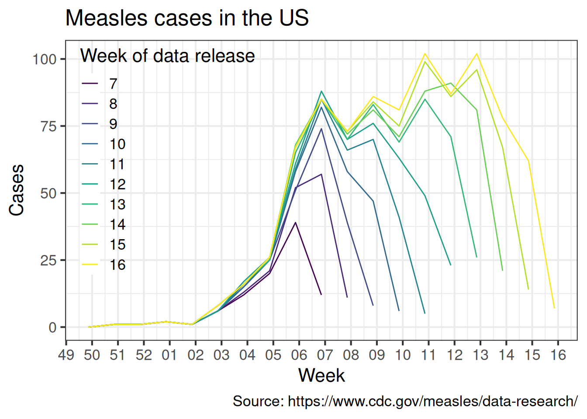
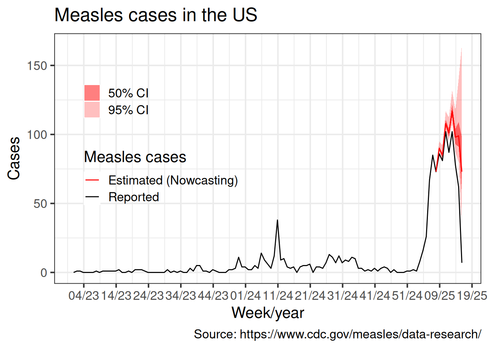
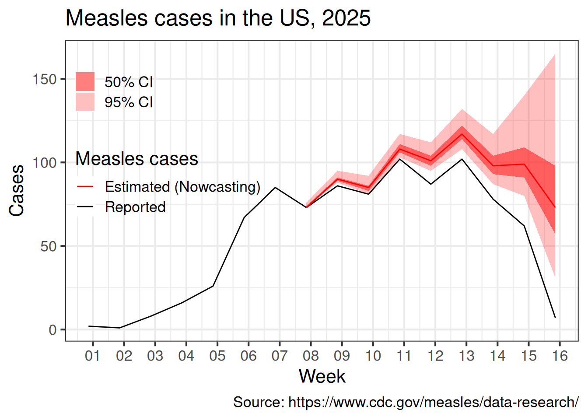

library(tidyverse)
library(nowcaster) # https://covid19br.github.io/nowcaster/
# Getting file names
files <- list.files("../data/", pattern="*.csv", full.names=TRUE)
measles <- lapply( files,
vroom::vroom) |>
bind_rows(.id = "a") |>
group_by(a) |>
mutate(
dt_week_release = max(week_start)
) |> ungroup() |> select(-a)Measles in the US, 2025
Introduction
This report aims to provide an estimate of the actual number of measles cases in the US using the datasets provided by the Center for Diseases Control (CDC).
Estimation is needed because in the epidemiological surveillance the most up-to-date information usually suffers from notification delay. This delay can be caused by several things, for instance the time from the symptoms onset to look after a hospital is already a source of delay, but there is also a time to confirm the case in a lab, there is also a time between the case been fully identified and the CDC become aware of that case.
The impact of such delay is that when a person look at the data by the symptoms onset, which is the correct thing to do because it is the date closer to the infection date, the most recent data is always truncated. This gives an impression that the number of cases are reducing but as mentioned the number of cases may be under represented because of reporting delays.
It is important to clarify the this under representation is in theory the same as the under notification, but the is an important difference. The under representation due to delays will eventually be reported and later be fully known. Of course there is also the under notification issue, i,e, cases the will never be in the system, and we are not dealing with them.
So the aim here is to organize the data, apply some statistical methods to correct the delays and visualize the total reported cases given b the reported cases and the cases that occured but have not been observed yet only estimated. This correction is called Nowcasting.
Data
Since end of February 2025, the in the United States releases every Friday, among other data, the weekly number of measles cases by rash onset date (https://www.cdc.gov/measles/data-research/index.html), Since then I downloaded every Friday the most up-to-date dataset with measles counts and save it in the data folder.
Delay correction model
The delay correction is based on the chain-ladder model described (and extended) in (Bastos et al. 2019) implemented in the nowcaster R package (Lopes and Bastos 2025). Let \(Y_{t,d}\) be the number of measles cases at week \(t\), \(t=1,2,\ldots,T\), delayed by \(d\) weeks, \(d=0,1,2,\ldots,D_{max}\). The Bayesian chain-ladder model is given by \[Y_{t,d} \sim NegBin(\lambda_{t,d}, \phi), \qquad \lambda_{t,d}>0, \quad \phi>0.\] And the expected number of the cases can decomposed by time and delay random effects as the following \[\log(\lambda_{t,d}) = \alpha + \beta_t + \gamma_d.\]
The number of cases by week are given by \[Y_t = \sum_{d=0}^{D_{max}}Y_{t,d}, \qquad t=1,2,\ldots,T.\] However, all \(Y_{t,d}\) for \(t+d>T\) are cases that occur but have not been reported yet. Those cases will be estimated from the posterior predictive \[f(\{y_{t,d: t+d > T}\}|\{y_{t,d: t+d\leq T}\}).\]
Samples from this distribution can be obtained and Monte Carlo estimates for the weekly cases can be calculated, called here as the nowcasting. More details of the method can be found in (Bastos et al. 2019).
Results
Figure 1 presents the number of measles cases in the US. The year of 2025 presents an large increase in the cases compared with the previous two years. A reducing of the number of cases can be noticed in the end of the time series. However the the most up-to-date number of cases are truncated because there are some cases the have not been reported yet.

The behavior of a false reduction in cases can be noticed when we look at all released datasets by CDC where and the end of the time series for each dataset the is a drop in the number of cases Figure 2. For example, in week 7, the number of reported measles cases at that week was (CONTINUE)

The data is prepared, the nowcasting run and the Monte Carlo is saved.
# Data preparing
time.tbl <- tibble(dt_time = seq(DT_trunc, max(measles$week_start), 7)) |> rowid_to_column(var = "time")
# Time of the first dataset
b = time.tbl$time [ time.tbl$dt_time == min(measles$dt_week_release) ]
# Time of the last dataset
B = max(time.tbl$time)
measles.aux <- measles |>
filter(week_start >= DT_trunc) |>
mutate(
delay = as.numeric(dt_week_release - week_start) / 7
) |> left_join(time.tbl, by = c("week_start" = "dt_time")) |>
mutate(TD = time + delay) |>
select(week_start, time, delay, Nt_td = cases, TD)
measles.aux2 <- measles |>
filter(week_start >= DT_trunc) |>
mutate(
delay = as.numeric(dt_week_release - week_start) / 7
) |> left_join(time.tbl, by = c("week_start" = "dt_time")) |>
# To make the dataset match TD = time + delay + 1 and TD.prev = time + delay (TD = TD.prev+1)
mutate(TD = time + delay + 1) |>
select(week_start, Nt_tdm1 = cases, TD)
measles.delay <- measles.aux |> left_join(measles.aux2) |>
mutate(Y = Nt_td - Nt_tdm1) |>
select(week_start, time, delay, Y) |>
filter(delay != 0) |>
bind_rows(
measles |>
mutate(
delay = as.numeric(dt_week_release - week_start) / 7
) |> left_join(time.tbl, by = c("week_start" = "dt_time")) |>
filter(delay==0) |>
select(week_start, time, delay, Y=cases)
) |> arrange(time, delay) |>
filter(time + delay > b, delay <= Dmax)
# Filling NAs for prediction
measles.NA <- tibble(
time = rep((b+1):B,Dmax),
delay = rep(1:Dmax,each=Dmax), Y = NA) |>
filter(time+delay > B) |>
left_join(time.tbl, by = "time") |>
rename( "week_start" = "dt_time")
# Runing the nowcasting model
out <- nowcasting_no_age(dataset = measles.delay |>
mutate(Y = ifelse(Y<0,0,Y)) |>
bind_rows(measles.NA) |>
rename("Time"="time", "dt_event"="week_start"))
# Saving the MOnte Carlo samples
measles.now <- nowcasting.summary(out, age = F)The corrected time series is then presented in Figure 3 and


References
Bastos, Leonardo S, Theodoros Economou, Marcelo F C Gomes, Daniel A M Villela, Flavio C Coelho, Oswaldo G Cruz, Oliver Stoner, Trevor Bailey, and Claudia T Codeço. 2019. “A Modelling Approach for Correcting Reporting Delays in Disease Surveillance Data.” Statistics in Medicine 38 (22): 4363–77. https://doi.org/10.1002/sim.8303.
Lopes, Rafael, and Leonardo Bastos. 2025. “Nowcaster: Nowcaster.” https://github.com/covid19br/nowcaster.